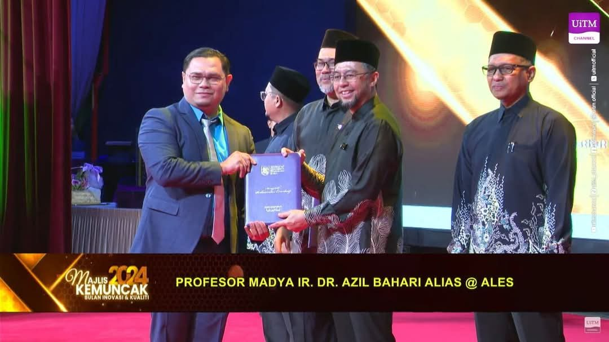
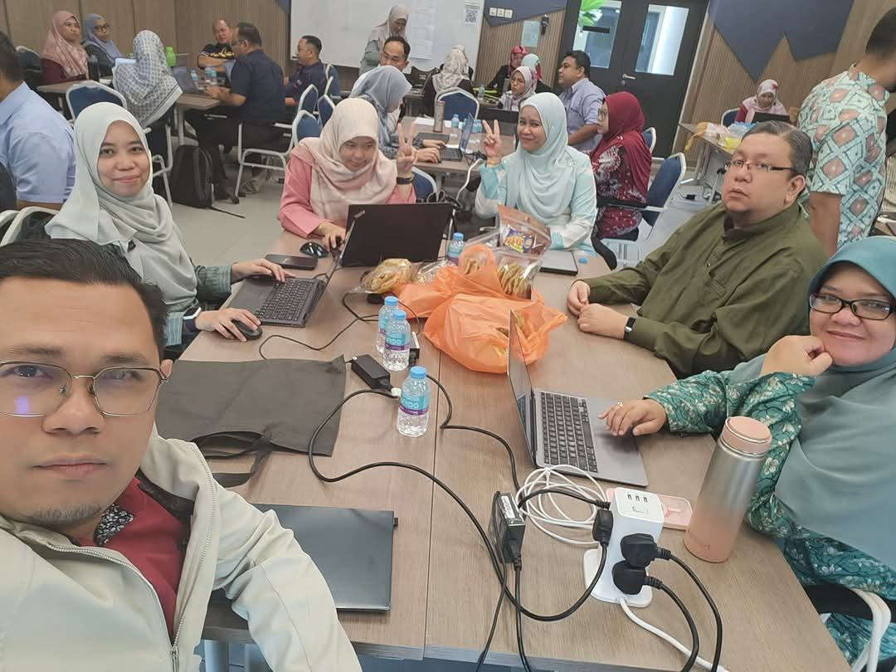
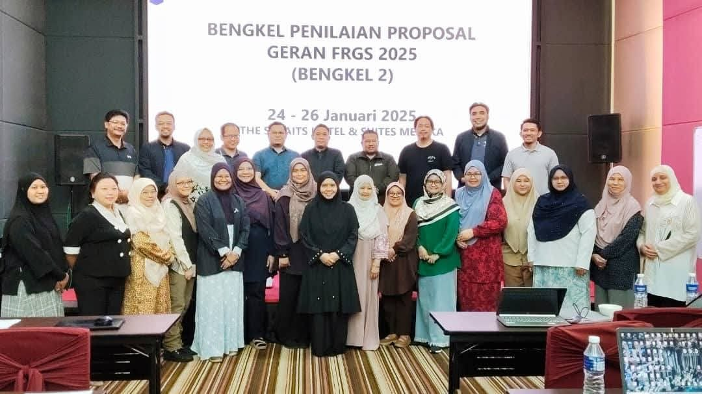
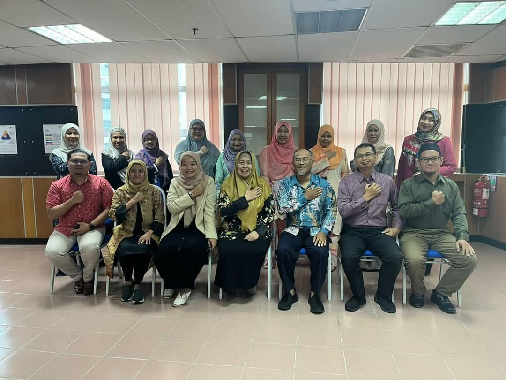
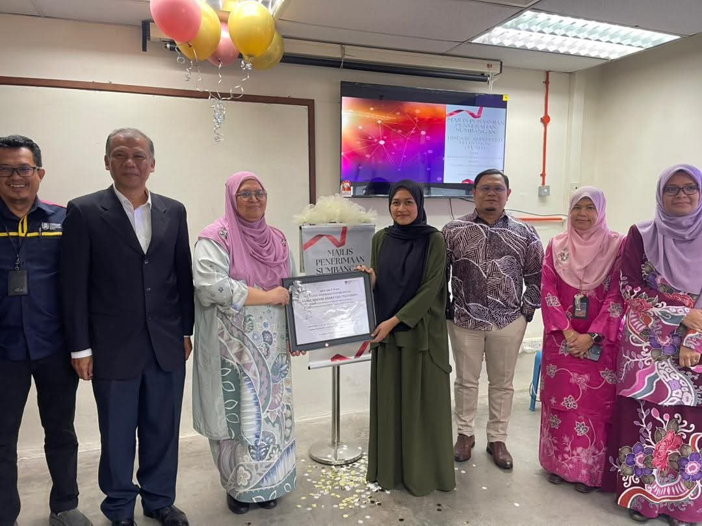
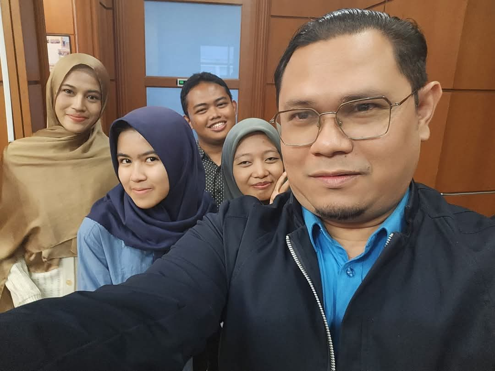
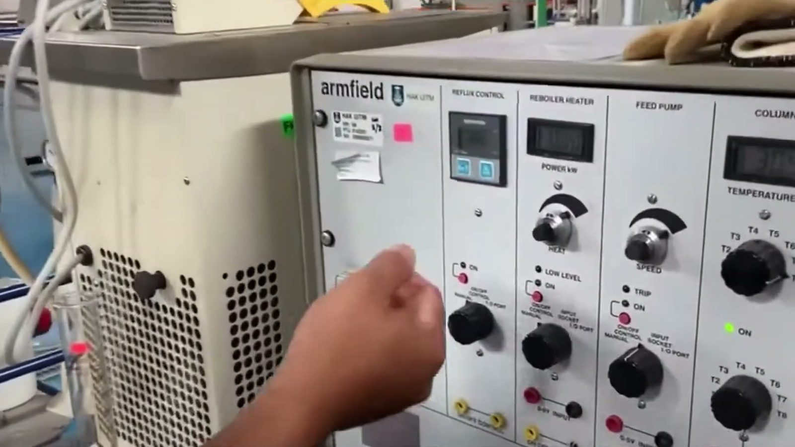
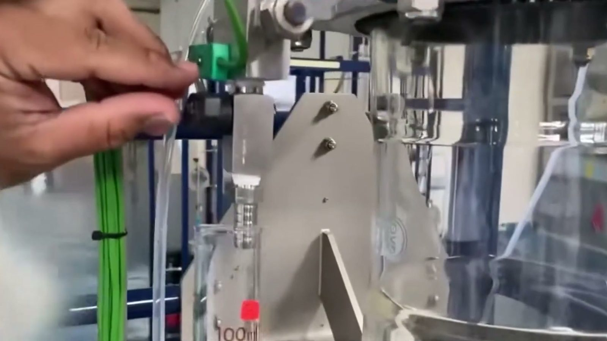
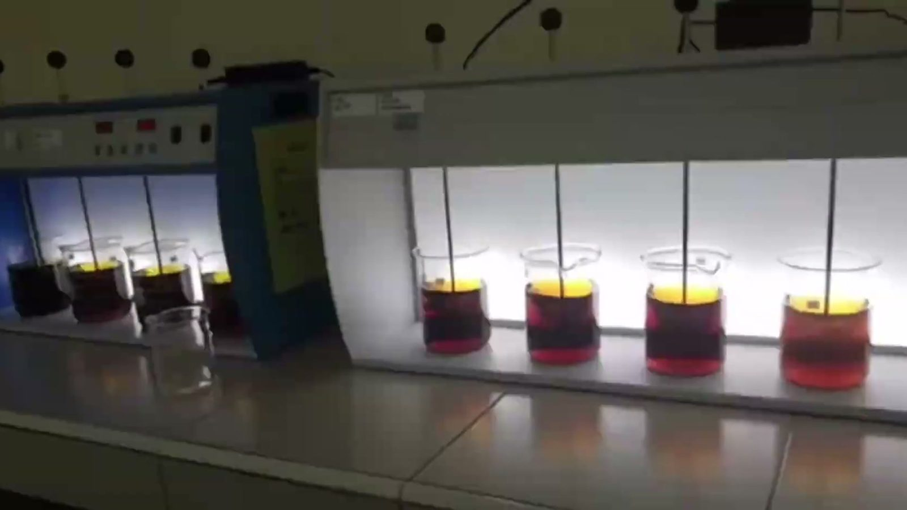

About INPRES
Industrial Process Reliability & Sustainability. A UiTM Entiti Kecemerlangan at the Faculty of Chemical Engineering, Shah Alam.

A-01
Two problems that turned out to be one
Assoc. Prof. Ir. Dr. Azil Bahari Alias leads INPRES, which UiTM registered as a Tier 4 Entiti Kecemerlangan in 2019 (CoRe1/T4/2019(1)/FMIA(1)). The idea was simple. A plant that leaks, corrodes or catches fire is not sustainable, and a plant that wastes energy and feedstock is rarely reliable for long. So the people who study safety and the people who study waste should sit in the same group.
The group has been rated five-star in every assessment from 2019 to 2024. In 2024 it was named Best Research Group at DNA Penyelidikan @ KPK, UiTM College of Engineering, and Dr Azil took the Most Publications Award on the same night.
Most of the work is for industry. Chlorine and chemical plants in Teluk Kalong, Kemaman. Glove factories in Klang, Ipoh and Kulim. PETRONAS fuel and LPG terminals in Pasir Gudang, Kerteh and Sepanggar Bay, Sabah. Coupons from the Pengerang refinery complex in Johor. Dr Azil now also serves as Dean of the Faculty of Chemical Engineering, and still leads the group.
A-02
What we cover
Our projects map to seven UN Sustainable Development Goals: 6, 7, 9, 11, 12, 13 and 17.
| Sustainability | Environmental engineering. Process systems engineering. |
|---|---|
| Reliability | Process safety and risk reliability engineering. Corrosion engineering. |
| Expertise | Waste to wealth, pollution control, energy, adsorption, facility siting, quantitative risk analysis, inherent safety, oil and gas pipeline corrosion, top-of-line corrosion, corrosion inhibitors, process design, operation and optimisation. |
| Where it is used | Oil and gas, chemical and glove manufacturing, oleochemicals, power, waste treatment, major hazard installations under CIMAH, hazardous area classification. |
Affiliated centre
Industrial Corrosion Research Centre (InCORE). Assoc. Prof. Ir. Dr. Najmiddin Yaakob runs INPRES corrosion work alongside UiTM’s Industrial Corrosion Research Centre. Recent clients include PETRONAS Research, Clariant, Hextar Kimia and Rohrback Cosasco Systems UK.
A-03
Revision history, 2019 to 2026
Dated, sourced entries only. The first two rows predate the group: members brought that work with them.
| Rev | Date | Description | By |
|---|---|---|---|
| pre | 2016 | First CIMAH safety report, for iSHARP.Before INPRES | UX |
| pre | 2017 | Top-of-line corrosion glass cell built for Daya Secadyme.Before INPRES | UX |
| A | 2019 | Registered as a UiTM Entiti Kecemerlangan, Tier 4 (CoRe1/T4/2019(1)/FMIA(1)), led by Dr Azil Bahari Alias. | PR/AB |
| B | 2019 | First five-star rating; the group holds it every year to 2024. | AB |
| C | 2020 | Prof. Juferi’s coconut shell biochar and activated carbon grant, RM 245,000. | UX |
| D | 2021 | Dr Fauziah Marpani becomes a Chartered Chemical Engineer (IChemE). | UX |
| E | 2022 | Most indexed papers in a single year (56). | UX |
| F | 2022 | PETRONAS Research funds the zeolite membrane reactor for DME from CO2 and H2 (Dr Nur Hashimah, Dr Fauziah). | UX |
| G | 2023 | PETRONAS Research funds volatile corrosion inhibitors for top-of-line corrosion, RM 0.7M. | UX |
| H | 2023 | PETRONAS Research appoints Prof. Shatir for molten metal pyrolysis to clean hydrogen and carbon. | UX |
| I | 2023 | Dr Najmiddin registered as an ASEAN Chartered Professional Engineer. | UX |
| J | 2024 | Best Research Group, DNA Penyelidikan @ KPK 2024, and Most Publications Award for Dr Azil. | AB |
| K | 2024 | Gold (OREGG) and silver (O-GEL) at iidex 2024. | AB |
| L | 2025 | Dr Azil appointed Dean of the Faculty of Chemical Engineering. | AB |
| M | 2025 | CIMAH studies for five PETRONAS fuel and LPG terminals. | UX |
| N | 2025 | Prof. Shatir named in the world’s top 2% scientists list for 2024. | UT |
| O | 2025 | Coupon analysis for Rohrback Cosasco Systems UK (PRefChem, Pengerang). | UX |
| P | 2026 | Rare earth separation validation for Pescada Resources; CIMAH for GES Klang Terminal LPG and Malay-Sino chlor-alkali. | UX |
| Q | 2026 | Ir. Dr. Zulkifli Abd Rashid promoted to full Professor. | FK |
Sources: UX UiTM Expert export, 8 Oct 2026 · AB INPRES Achievement Booklet 2026 · PR UiTM project record · UT Utusan Malaysia, 24 Sep 2025 · FK Faculty of Chemical Engineering website. Five-star ratings per year not seen individually, only the 2019 to 2024 range.
A-04
Lab life
Terminals, mills, workshops and one good night in 2024. Drag, scroll or use the arrows; tap a photo to enlarge.












A-05
Academic partners
Universities in Malaysia and abroad that INPRES members work with.